- 00 开篇词 JavaScript的进阶之路.md.html
- 01 函数式vs.面向对象：响应未知和不确定.md.html
- 02 如何通过闭包对象管理程序中状态的变化？.md.html
- 03 如何通过部分应用和柯里化让函数具象化？.md.html
- 04 如何通过组合、管道和reducer让函数抽象化？.md.html
- 05 map、reduce和monad如何围绕值进行操作？.md.html
- 06 如何通过模块化、异步和观察做到动态加载？.md.html
- 07 深入理解对象的私有和静态属性.md.html
- 08 深入理解继承、Delegation和组合.md.html
- 09 面向对象：通过词法作用域和调用点理解this绑定.md.html
- 10 JS有哪8种数据类型，你需要注意什么？.md.html
- 11 通过JS引擎的堆栈了解闭包原理.md.html
- 12 JS语义分析该用迭代还是递归？.md.html
- 13 JS引擎如何实现数组的稳定排序？.md.html
- 14 通过SparkPlug深入了解调用栈.md.html
- 15 如何通过哈希查找JS对象内存地址？.md.html
- 16 为什么环形队列适合做Node数据流缓存？.md.html
- 17 如何通过链表做LRU_LFU缓存？.md.html
- 18 TurboFan如何用图做JS编译优化？.md.html
- 19 通过树和图看如何在无序中找到路径和秩序.md.html
- 20 算法思想：JS中分治、贪心、回溯和动态规划.md.html
- 21 创建型：为什么说Redux可以替代单例状态管理.md.html
- 22 结构型：Vue.js如何通过代理实现响应式编程.md.html
- 23 结构型：通过jQuery看结构型模式.md.html
- 24 行为型：通过观察者、迭代器模式看JS异步回调.md.html
- 25 行为型：模版、策略和状态模式有什么区别？.md.html
- 26 特殊型：前端有哪些处理加载和渲染的特殊“模式”？.md.html
- 27 性能：如何理解JavaScript中的并行、并发？（上）.md.html
- 28 性能：如何理解JavaScript中的并行、并发？（下）.md.html
- 29 性能：通过Orinoco、Jank Busters看垃圾回收.md.html
- 30 网络：从HTTP_1到HTTP_3，你都需要了解什么？.md.html
- 31 安全：JS代码和程序都需要注意哪些安全问题？.md.html
- 32 测试（一）：开发到重构中的测试.md.html
- 33 测试（二）：功能性测试.md.html
- 34 测试（三）：非功能性测试.md.html
- 35 静态类型检查：ESLint语法规则和代码风格的检查.md.html
- 36 Flow：通过Flow类看JS的类型检查.md.html
- 37 包管理和分发：通过NPM做包的管理和分发.md.html
- 38 编译和打包：通过Webpack、Babel做编译和打包.md.html
- 39 语法扩展：通过JSX来做语法扩展.md.html
- 40 Polyfill：通过Polyfill让浏览器提供原生支持.md.html
- 41 微前端：从MVC贫血模式到DDD充血模式.md.html
- 42 大前端：通过一云多端搭建跨PC_移动的平台应用.md.html
- 43 元编程：通过Proxies和Reflect赋能元编程.md.html
- 结束语 JavaScript的未来之路：源于一个以终为始的初心.md.html
- 捐赠
10 JS有哪8种数据类型，你需要注意什么？
你好，我是石川。
JavaScript的数据类型看上去不难理解，但是你确定真的理解并且会用它们吗？实际上，如果不系统地理解数据类型的概念，很可能会导致一些隐藏问题时不时地冒出来，给我们写的程序挖坑。比如简单的加法计算可能就会带来意想不到的结果值；或者没有很好地利用到JS的一些长处，让开发更便捷，比如说通过内置的包装对象快速获取值的属性。
在正式开始之前，我还是要先说明一下，虽然现在JS介绍数据类型的书和资料不在少数，我们也不会在这里做理论赘述。但我还是会先带你快速建立起对值的基本认识框架，然后通过对问题的深入了解，以此达成扬长避短的目标。
那么，JavaScript当中有几种类型的值呢？答案是8种。如果再归归类，我们还可以把它们分为两大类，分别是原始类型（Primitive Type）和对象类型（Object Type）。
其中，原始数据类型包含了数字、布尔、字符串、BigInt、null、undefined，以及后来新增的symbol，这个数据类型的值都是不可变的（immutable）。
对象数据类型则包含我们经常说的对象，对象的值是可变的（mutable）。它是一个大类，如果再细分，它又包含了我们常用的数组（array）、函数（function）、Date、RegExp，以及后来新增的Map和Set。没错，我们经常用的数组、函数作为值都属于对象数据类型。
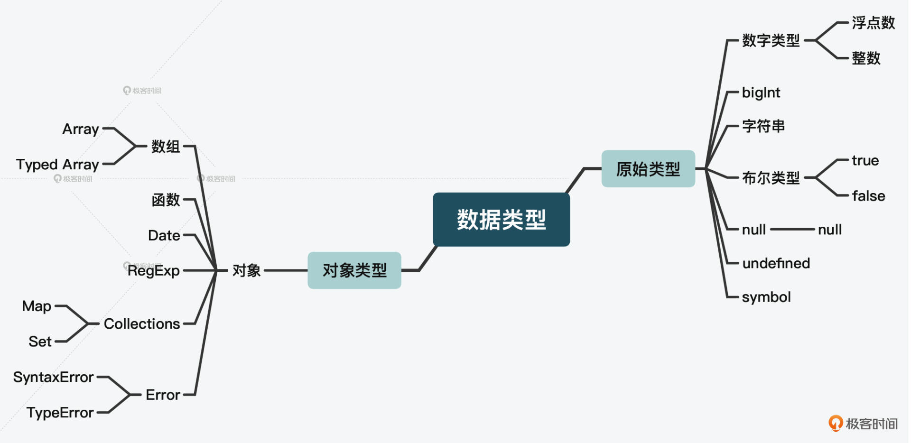
好，在了解了数据类型的划分后，接下来，我们会通过不同类型在实际应用时会出现的各种问题，来进一步了解它们的原理和使用方法，打下底层基础，为后面的学习铺平道路。
下面，我们就从原始类型数据开始说起。
原始类型
原始类型是我们经常用到的数据类型，这里有基础的类型，比如数字、字符串和布尔，也有特殊的类型，比如null和undefined。相比对象类型，原始类型数据从值的角度来看是理论和实际偏差最大的部分，另外因为它看上去比较简单，所以也同时是很容易被忽略的部分。
所以，我们这节课的重点，就是要把这些问题用放大镜放大，深入浅出地了解它的核心原理和解决方案。
number数字：为什么0.1+0.2不等于0.3？
我们先来做个小实验：在Chrome开发者工具中输入0.1+0.2，得到的结果是什么？惊不惊喜，意不意外？最后的结果竟然不是0.3，后面还有\(4 \\times 10^{-17}\)。
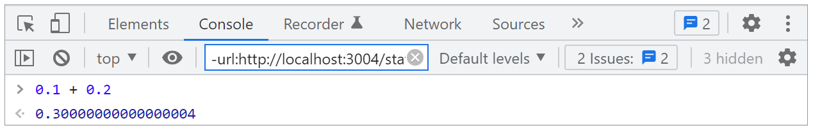
为什么会出现这样的情况？我们可以先回头看下这个数据类型脑图，JavaScript中的数字类型包括了两类：浮点数和整数。
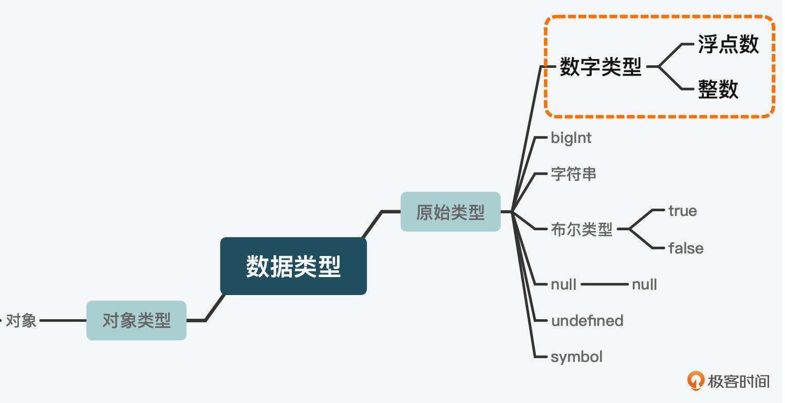
而以上运算使用的就是浮点数。那和浮点数对应的是什么呢？是定点数。
定点数的好处是可以满足日常的小额计算。但它也有很大的缺点，就是在进行很小或很大的数字计算时，会浪费很大的空间。比如我们想表达中国有14亿人口， 如果写起来，就是1,400,000,000，14后面8个零。所以要解决这个问题，就需要用到科学计数法。
浮点数是采用科学计数法来表示的，由尾数（significand mantissa）、基数（base）和指数（exponent）三部分组成。上面的数字如果是用科学计数法表示，只需要写成\(1.4 \\times 10^{9}\)即可。对于小数，就是反之，拿0.002举例，数字是2，那么小数就是10的负3次方。
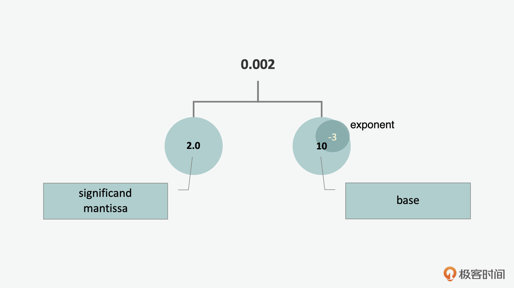
上面我们看的是十进制的例子，而JavaScript所采用的IEEE 754 是二进制浮点数算术标准。这个标准里规定了4种浮点数算术方式：单精确度、双精确度、延伸单精确度与延伸双精确度。JavaScript在这里选择的又是双精确度（64位）这种方式，通常也叫double或者float64类型。
这种方式顾名思义，有64位比特。其中包含了1个比特的符号位（sign）、11个比特的有偏指数（exponent）、还有52个比特的小数部分（fraction）。
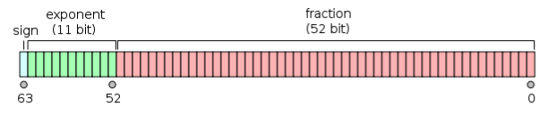
因为把十进制转化为二进制的算法是用十进制的小数乘以2直到没有了小数为止，所以十进制下的有些小数无法被精确地表示成二进制小数。而既然这里的浮点数是二进制，因此小数就会存在精度丢失的问题。
而且当我们使用加减法的时候，由于需要先对齐（也就是把指数对齐，过程中产生移位），再计算，所以这个精度会进一步丢失。并且根据JavaScript引擎实际返回的小数点后的位数，可能会出现第三次丢失。这样下来，最后的结果就和实际相加减的数有偏离。
现在，我们就了解了精度丢失的问题，这并不是一个bug，而是符合标准设计的。同时，我们也了解了出现这种情况的原因和实际运算的步骤，那我们需要做什么才能解决由它引起的精度问题呢？
通常对于这个问题的处理，是通过按比例放大再缩小。我们来看个例子，假如要设置一个19.99元的商品，我们可以把它先变成1999，这样就可以做加法计算，之后再缩小。
var priceBigInt = 1999n;
var priceStr = String(priceBigInt);
var priceYuan = `￥${priceStr.slice(0,-2)}.${priceStr.slice(-2)}`;
console.log(priceYuan);
NaN：如何判断一个值是不是数字？
如果说浮点数给我们带来了意料之外、情理之中的惊喜，那么NaN带给我们的则是意料之外且情理之外的惊喜了。
惊喜1- 在IEEE 754中，NaN虽然代表的是“不是数字”的意思，但是如果我们用typeof NaN来获取，会发现它返回的是number。
惊喜2- 原始类型有个特点，就是两个数据的数值一样，会被当做是等同的。而对象类型则相反，即使两个数据的数值一样，也会被当做是不同的数值，每一个数值都有一个唯一的身份。
我们可以通过下面的例子来看一下。当我们严格比较两个数字时，返回的就是true；当我们严格比较两个对象字面量时，返回的结果就是false。
123 === 123 // 返回 true
{} === {} // 返回 false
按照这样的原则，既然NaN是数字的值，如果我们输入NaN严格比较NaN，原则上应该返回的是true，可实际NaN返回的却是false。
NaN === NaN // 返回 false
- 惊喜3- JavaScript中会通过isNaN来判断一个值是不是数字，但是当我们输入一个字符串，它也会被当做是一个数字。因为在这个过程中，“0”这个字符串被转换成了数字。
isNaN("0") // 返回 false
所以，从这些惊喜中我们可以发现，想通过NaN和isNaN来判断一个值是不是数字的做法，是很不靠谱的。
那么，如何才能更正确地判断一个值是不是数字呢？
我们可以通过判断值的类型，并加上一个isFinite这种方式来判断。isFinite是JavaScript中的一个内置函数，通过它，我们可以过滤掉NaN和Infinity。
但是要注意，和惊喜3一样，它会把括号中的值比如字符串转化成数字，所以我们需要再通过typeof来确保这种被转换的问题不会被漏掉。
var isNum = function isNum(value){
return typeof value === 'number' && isFinite(value);
}
string字符串：一串字符有多长？
我们知道，原始类型的数据除了undefined和null以外，都有内置的包装对象（object wrapper）。那么下面就让我们通过字符串，来看一下它是怎么工作的。
可以看到在这个例子中，我们是用new String()这样的constructor的方式创建一个字符串。而当我们想要获取它的长度时，就可以采用str.length方法来获取。
var str = new String("hello");
str.length // 返回 5;
typeof str // 返回 'object'
但是，即使你不用constructor这种方式，也仍然可以用字面量的方式来获取字符串的长度（length）。在这个过程中，你同样可以看到长度结果的返回。而且，当你再用typeof来获取它的类型时，收到的结果仍然是字符串，而不是对象。
这是因为在你使用length这个方法的时候，JavaScript引擎临时创建了一个字符串的包装对象。当这个字符串计算出长度后，这个对象也就消失了。所以当你再回过头来看str的类型时，返回的是字符串而不是对象。
var str = "hello";
str.length // 返回 5
typeof str // 返回 'string'
boolean布尔：你分得清真假吗？
在Java中，布尔类型的数据包含了真值true和假值false两个值。但需要注意的是，在JavaScript中，除了false以外，undefined、null、0、NaN和“‘’”也都是假值。
这里你一定会问，那么真值有哪些呢？其实你可以使用排除法，除了假值以外的，都可以认为是真值。为了方便查询，你可以参考下面这个列表。- 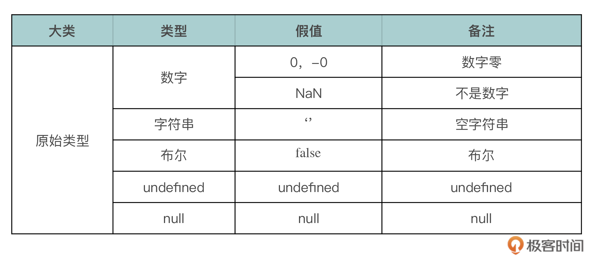
null：什么，你是个对象？
我们前面说过，null是六种原始数据类型中独立的一种。可当我们用typeof来获取null的种类时，返回的结果是’object’，也就是说它是属于对象类型。
这是一个bug，但是也并非完全没有逻辑的bug，因为null实际是一个空的对象指针。
那我们要如何判断一个值是不是null呢？解决这个问题方法，其实就是不用typeof，而是直接将值和null做严格比较。
除了null以外，另外一个和它类似的是undefined。如果说null代表值是空对象，undefined代表的就是没有值。但是当我们对比它们的值时，它们却是相等的；另外严格比较它们的数据类型的时候，又会发现它们是不同的。
null == undefined // 返回 true
null === undefined // 返回 false
所以，我们判断值是否为空，可以是 if (x === undefined || x === null) {}，也可以是 if (!x) {…}。
那么我们什么时候用undefined，什么时候用null呢？通常我们是不用undefined的，而是把它作为系统的返回值或系统异常。比如当我们声明了一个变量，但是没有赋值的情况下，结果就是undefined。而当我们想特意定义一个空的对象的时候，可以用null。
var a;
a // undefined
var b = null;
if (b != null）{
// do something!
}
对象类型
说完了原始类型，我们再来看看对象类型。原始类型的问题都是非黑即白的，比如我们前面看到的问题都是由于JavaScript设计中的某种限制、缺陷或bug造成的。
而对象类型的问题，更多是在不同场景下、不同的使用方式所体现出的优劣势。
为什么基于对象创建的实例instanceOf返回错误？
你要创建一个对象，既可以通过字面量也可以通过constructor的模式（我们在后面讲设计范式的时候还会更具体地提到这一点，这里我们只需要了解它的不同使用方式）。但这里你需要注意的问题是，如果你进一步基于一个对象创建实例，并且用到我们之前讲面向对象编程模式中提到的Object.create()的话，这样的情况下，你没法用instanceOf来判断新的实例属于哪个对象。
因为这里的两个对象间更像是授权而不是继承的关系，之间没有从属关系，所以返回的是错误。而通过经典的基于原型的继承方式创建的实例，则可以通过instanceOf获取这种从属关系。
这里我们可以来对比下字面量，constructor以及基于原型的继承的使用，具体你可以参考以下代码示例：
// 方式1：字面量
var objA = {name: "Object A"};
var objB = Object.create(objA);
console.log(objB instanceof objA); // 返回 类型错误
// 方式2：constructor
var objA = new Object();
objA.name = "Object A";
var objB = Object.create(objA);
console.log(objB instanceof objA); // 返回 类型错误
// 经典的基于原型的继承
var objA = function() {
/* more code here */
}
objB = new objA();
console.log(objB instanceof objA); // 返回 true
其实，不光是对象，数组和函数也都可以不用constructor，而是通过字面量的方式创建。反之，我们说的数字、字符串和布尔除了字面量，也都可以通过constructor创建。
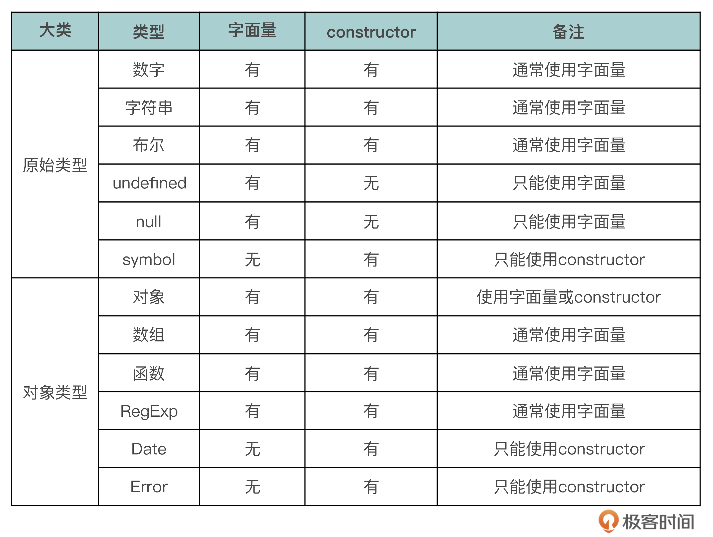
我们知道，原始类型是不可改变的，而对象类型则是可变的。比如下面这个例子，当定义一个字符串，通过 toUpperCase() 把它变成大写后，再次获取它的值时，会发现其仍然是小写。
var str = "hello";
str.toUpperCase(); // 返回 HELLO
str; // 返回 hello
而如果我们尝试给一个对象增加一个属性，那么再次获取它的属性的时候，其属性就会改变。
var obj = { vehicle: "car" };
obj.vehicle= "bus";
console.log (obj.vehicle); // 返回 bus
另外一点需要注意的是，对象数据在栈中只被引用，而实际存放在堆中。举个例子，假如我们有两个变量，变量personA赋值为{name: “John”, age：25}，当我们将personB赋值为personA，然后修改personA的名称，那么personB的名字也会改。因为它们引用的都是堆中的同一个对象。
var personA = {
name: "John",
age:25
};
var personB = personA;
personB.name = "Jack";
personA.name; // 返回 Jack
personB.name; // 返回 Jack
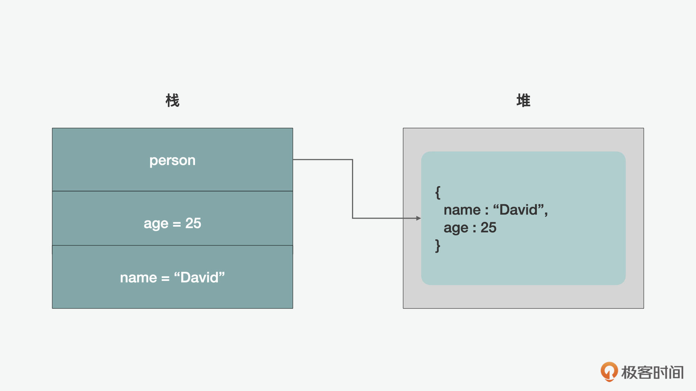
如何识别一个数组？
前面我们说过，数组其实是对象，那我们怎么能判断一个值是数组还是对象呢？其实就是我刚刚提到过很多次的typeof，它可以帮我们了解一个“值”的种类。当我们用typeof来获取对象和数组的种类时，返回的都是object。
但是，前面我们也说过，null返回的也是object，这样我们用typeof是没有办法来实际判断一个值是不是对象的。不过，因为null是一个假值，所以我们只要加一个真假判断，和typeof结合起来，就可以排除null，来判断是否一个值实际是不是对象。
if (myVal && typeof myVal == 'object') {
// myVal 是一个对象或数组
}
好，上面的例子能筛选对象了，可我们仍然没法判断一个对象是不是数组。
其实，在ES5以后，JavaScript就有了isArray的内置功能，在此之前，人们都是通过手写的方式来判断一个值是不是数组。但在这儿，为了更好地理解原理，我们可以在上面例子的基础上，做一个isArray的功能。
这里我们用到了数组的特性，数组虽然从数据类型上看也是一种对象，但是它和对象值相比，区别在于是否可以计算长度。
if (myVal && typeof myVal === "object" &&
typeof myVal.length === "number"
&& !(myVal.propertyIsEnumerable("length"))) {
console.log("yes");
}
除此之外，我们也可以用在前面讲到面向对象时，讲到的“基于原型的继承”中学过的原型来判断。
if (typeof Array.isArray === 'undefined') {
Array.isArray = function (arg) {
return Object.prototype.toString.call(arg) === "[object Array]";
};
}
function函数字面量：是声明还是表达？
函数在JavaScript中主要有两种写法，表达式和声明式。
- 声明式函数
我们先来看看在JavaScript中，什么是声明，都有哪些形式的声明。
如下图所示，我们大致把声明分为了变量、常量、函数和类这四种类型。从中可以看出，这四大类声明几乎都是我们接触过的常用的语句，比如变量、常量和函数都是我们在讲到函数式和不可变时有提到过的，类则是我们在面向对象编程时讲过的。
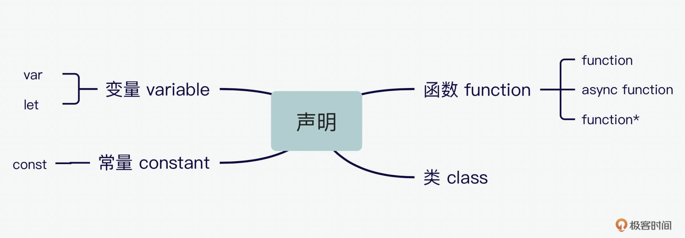
说完声明，我们再看看声明式函数。声明式函数最大的好处就是可以用于函数提升hoisting。可以说，除了有特殊需求会用到表达式以外，声明式就是默认的写法，下面是一个声明式函数的抽象语法树AST（abstract syntax tree）。
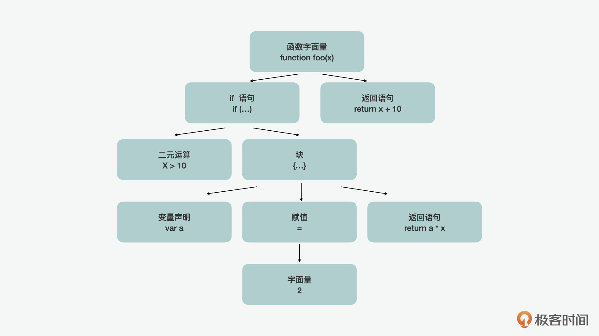
function a = {} // 声明式
- 表达式函数
下面我们再来看看表达式函数。首先同样的问题，什么是表达式？一个语句里面可以有很多的表达，而表达式函数其实就是把函数作为这样的一个表达。在表达式函数中，又可以分为两种写法：
第一种是把函数当一个字面量的值来写，它的好处是可以自我引用。
var a = function() {} // 表达式
第二种是在ES6中，函数表达也可以通过箭头函数的方式来写。它的好处是可以用于this、参数和super相关的绑定。
var a = () => {}; // 表达式-箭头函数
延伸：类型之间如何转换？
另外，在JavaScript中，我们还会经常遇到的一个问题是：如何将一个值从一种类型转换到另外一种类型呢？
其实这里可以用到强制多态coercion。强制多态一般分为两种方式：一种是通过显性explicit的；另外一种是通过隐性implicit的。比如说，我们可以通过显式explicit，将一个字符串转化成为一个数字。
var a = 42;
var b = a + ""; // implicit coercion
var c = String(a); // explicit coercion
以上面这段代码为例，当a = 42时，它是一个数字，b通过隐性的强制多态，把它变成了一个字符串。c则通过显性的强制多态，把它变成了一个字符串。在ECMAScript 的官方文档中，有相关的运行时的判断条件，实际浏览器会通过类似以下的算法来判断对应的处理。
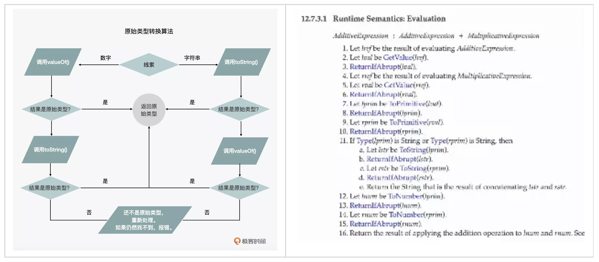
总结
通过这一讲，希望你对JavaScript的数据类型有了更系统的了解，也对不同数据类型的相关问题有了更好的解决方式，从而扬长避短。
但除了解决执行层面的问题，也更希望你能发现JavaScript之美和不足之处。如果你之前看过《黄金大镖客》，可能知道它的英文名字叫_The Good, the bad, the ugly_。在JavaScript里，通过对数据类型的认识，我们同样可以看到它的美和不足之处，这同时也才是它的精彩之处。
它的美在于简单、灵活。我们可以看到数字、字符串虽然简单，但又可以灵活地使用内置的包装对象，来返回属性和使用强大的调用功能；对象、函数、数组虽然是复杂的数据类型，但又都可以通过字面量来表示。
同时，JS也有着不足之处，特别是原始数据的一些缺陷和bug，但正是它的灵活和没有那么多条条框框，当初才吸引了很多开发者。除了语言本身的进化外，工程师们通过各种方式克服了这些缺陷。
最后，我们再来丰富下开篇中的脑图，一起总结下今天所学到的内容。让我们在记忆宫殿中将这些关键的信息通过这张脑图，放到我们信息大厦里的“JS之法”这一层吧！
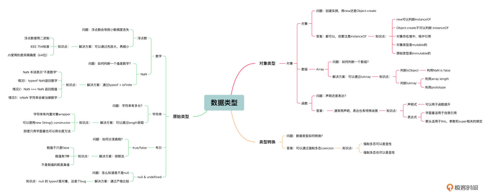
思考题
课程中我们总结过有些类型的数据既可以用字面量也可以用constructor来创建，那你觉得哪种方式在不同场景下更适合呢？
欢迎在留言区分享你的答案和见解，我们一起交流讨论。另外，也欢迎你把今天的内容分享给更多的朋友。我们下期再见！
© 2019 - 2023 Liangliang Lee. Powered by gin and hexo-theme-book.